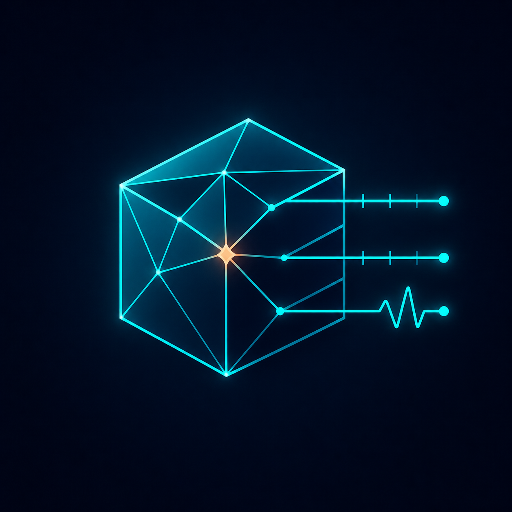

Sealed capture + telemetry
Diagnose the render, not just the screenshot.
Synthetic validation fixture · not a GPU claim
Baseline run_fixture_a
color · populated water material
Candidate run_fixture_b
color · water region black
Difference heatmap threshold 0
changed pixels localized below horizon
color.mean_luminance0.412 → 0.238−42.2%
depth.coverage0.983 → 0.983stable
object_id.unique14 → 14stable
material_id.water7 → missingregressed